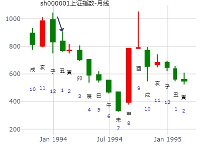
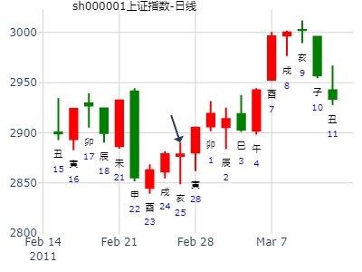
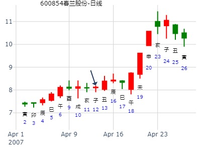
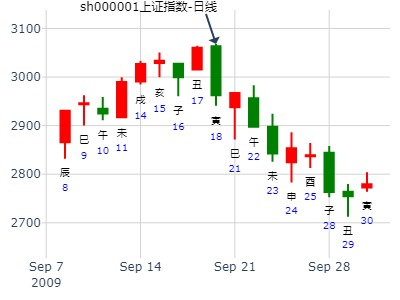

17--21大盘涨跌情况
公历：2011年1月15日，星期六。
干支：庚寅年 己丑月 庚午日 (卦身：卯)
主变卦 山水蒙(离宫) 之 地水师(坎宫) [空亡:戌、亥]
螣蛇 ▅▅▅▅▅○父母丙寅木 ▅▅ ▅▅ 妻财癸酉金 应
勾陈 ▅▅ ▅▅ 官鬼丙子水 ▅▅ ▅▅ 官鬼癸亥水
朱雀 妻财己酉金 ▅▅ ▅▅ 子孙丙戌土 世 ▅▅ ▅▅ 子孙癸丑土
青龙 ▅▅ ▅▅ 兄弟戊午火 ▅▅ ▅▅ 兄弟戊午火 世
玄武 ▅▅▅▅▅ 子孙戊辰土 ▅▅▅▅▅ 子孙戊辰土
白虎 ▅▅ ▅▅ 父母戊寅木 应 ▅▅ ▅▅ 父母戊寅木
蒙之师_上证一年行情_1994-01-27
时间: 1994-01-27
干支: 癸酉年乙丑月癸丑日 (旬空: 寅卯 )
山水蒙 地水师(归魂)
六神 伏神 本 卦 变 卦
白虎 ▅▅▅▅▅ 父母寅木 Ｏ→ ▅▅ ▅▅ 妻财酉金 应
腾蛇 ▅▅ ▅▅ 官鬼子水 ▅▅ ▅▅ 官鬼亥水
勾陈 妻财酉金▅▅ ▅▅ 子孙戌土 世 ▅▅ ▅▅ 子孙丑土
朱雀 ▅▅ ▅▅ 兄弟午火 ▅▅ ▅▅ 兄弟午火 世
青龙 ▅▅▅▅▅ 子孙辰土 ▅▅▅▅▅ 子孙辰土
玄武 ▅▅ ▅▅ 父母寅木 应 ▅▅ ▅▅ 父母寅木

大盘马年财运。燕山月。
干支：甲午年 丙寅月 丁未日 丙午时 2014-2-5 （日空：寅卯）
神煞：驿马－巳 桃花－子 日禄－午 贵人－酉，亥
离宫：山水蒙 坎宫：地水师 (归魂)
六神 伏神 本 卦 变 卦
青龙 父母丙寅木 ▅▅▅▅▅ ○→ 妻财癸酉金 ▅▅ ▅▅ 应
玄武 官鬼丙子水 ▅▅ ▅▅ 官鬼癸亥水 ▅▅ ▅▅
白虎 妻财己酉金 子孙丙戌土 ▅▅ ▅▅ 世 子孙癸丑土 ▅▅ ▅▅
腾蛇 兄弟戊午火 ▅▅ ▅▅ 兄弟戊午火 ▅▅ ▅▅ 世
勾陈 子孙戊辰土 ▅▅▅▅▅ 子孙戊辰土 ▅▅▅▅▅
朱雀 父母戊寅木 ▅▅ ▅▅ 应 父母戊寅木 ▅▅ ▅▅
居然和大盘一起走，才有财可得。
占事：上证指数2015年3月份后走势
公历起卦时间：2015年2月23日15时30分 (在线摇卦)
干支：乙未年 戊寅月 庚午日 甲申时 （日空：戌亥）
离宫：山水蒙 坎宫：地水师 (归魂)
六神 伏神 本 卦 变 卦
腾蛇 父母丙寅木 ▅▅▅▅▅ ○→ 妻财癸酉金 ▅▅ ▅▅ 应
勾陈 官鬼丙子水 ▅▅ ▅▅ 官鬼癸亥水 ▅▅ ▅▅
朱雀 妻财己酉金 子孙丙戌土 ▅▅ ▅▅ 世 子孙癸丑土 ▅▅ ▅▅
青龙 兄弟戊午火 ▅▅ ▅▅ 兄弟戊午火 ▅▅ ▅▅ 世
玄武 子孙戊辰土 ▅▅▅▅▅ 子孙戊辰土 ▅▅▅▅▅
白虎 父母戊寅木 ▅▅ ▅▅ 应 父母戊寅木 ▅▅ ▅▅
此卦子孙持世，月克日生；财伏藏于主力世爻之下，财得生。父动化财，先跌而后涨。按卦象而论，年初继续上攻而形成短期头部，经过中期调整，酉月之后再次发力上涨，全年整体看涨。马后炮：申冲了寅木暗动。跌。酉涨。戌涨。丑墓金大跌。兄弟午火值月时大跌。
测万马股份庚子年上半年哪月是顶？
公历起卦时间：2020年2月24日19时12分 (电脑自动)
干支：庚子年 戊寅月 丁酉日 庚戌时 （日空：辰巳）
神煞：驿马－亥 桃花－午 日禄－午 贵人－酉，亥
离宫：山水蒙 坎宫：地水师 (归魂)
六神 伏神 本 卦 变 卦
青龙 父母丙寅木 ▅▅▅▅▅ ○→ 妻财癸酉金 ▅▅ ▅▅ 应
玄武 官鬼丙子水 ▅▅ ▅▅ 官鬼癸亥水 ▅▅ ▅▅
白虎 妻财己酉金 子孙丙戌土 ▅▅ ▅▅ 世 子孙癸丑土 ▅▅ ▅▅
螣蛇 兄弟戊午火 ▅▅ ▅▅ 兄弟戊午火 ▅▅ ▅▅ 世
勾陈 子孙戊辰土 ▅▅▅▅▅ 子孙戊辰土 ▅▅▅▅▅
朱雀 父母戊寅木 ▅▅ ▅▅ 应 父母戊寅木 ▅▅ ▅▅
2011-2月21-25日大盘走势
公历时间：2011年2月25日8时24分 星期五
农历时间：辛卯年正月廿三辰时
干支：辛卯年 庚寅月 辛亥日 壬辰时 (旬空：寅卯)
神煞：驿马—巳 桃花—子 日禄—酉 贵人—寅，午
离宫：山水蒙 坎宫：地水师（归魂）
六神 伏 神 【本 卦】 【变 卦】
螣蛇 ▅▅▅▅▅ 父母丙寅木 ○→ ▅▅ ▅▅ 妻财癸酉金 应
勾陈 ▅▅ ▅▅ 官鬼丙子水 ▅▅ ▅▅ 官鬼癸亥水
朱雀 妻财己酉金 ▅▅ ▅▅ 子孙丙戌土 世 ▅▅ ▅▅ 子孙癸丑土
青龙 ▅▅ ▅▅ 兄弟戊午火 ▅▅ ▅▅ 兄弟戊午火 世
玄武 ▅▅▅▅▅ 子孙戊辰土 ▅▅▅▅▅ 子孙戊辰土
白虎 ▅▅ ▅▅ 父母戊寅木 应 ▅▅ ▅▅ 父母戊寅木
这个卦象与周卦一样，解卦方便，不用再解一次了，看升。

风生水起：连云港丁酉年卦17.3.17-18.3.16
时间: 2017-03-17
干支: 丁酉年癸卯月癸卯日丙辰时 (旬空: 辰巳 )
山水蒙 地水师(归魂)
六神 伏神 本 卦 变 卦
白虎 ▅▅▅▅▅ 父母寅木 Ｏ→ ▅▅ ▅▅ 妻财酉金 应
腾蛇 ▅▅ ▅▅ 官鬼子水 ▅▅ ▅▅ 官鬼亥水
勾陈 妻财酉金▅▅ ▅▅ 子孙戌土 世 ▅▅ ▅▅ 子孙丑土
朱雀 ▅▅ ▅▅ 兄弟午火 ▅▅ ▅▅ 兄弟午火 世
青龙 ▅▅▅▅▅ 子孙辰土 ▅▅▅▅▅ 子孙辰土
玄武 ▅▅ ▅▅ 父母寅木 应 ▅▅ ▅▅ 父母寅木
占事：周五大盘 4.11大盘
起卦方式：手动摇卦
公历时间：2014年4月10日14时39分
干 支：甲午年 戊辰月 辛亥日 乙未时
旬 空：辰巳 戌亥 (寅卯) 辰巳
神 煞：驿马─巳 桃花─子 日禄─酉 贵人─寅，午
离宫：山水蒙 坎宫：地水师（归魂）
六神 伏 神 【本 卦】 【变 卦】
螣蛇 ▄▄▄▄▄ 父母丙寅木 O-> ▄▄ ▄▄ 妻财癸酉金 应
勾陈 ▄▄ ▄▄ 官鬼丙子水 ▄▄ ▄▄ 官鬼癸亥水
朱雀 妻财己酉金 ▄▄ ▄▄ 子孙丙戌土 世 ▄▄ ▄▄ 子孙癸丑土
青龙 ▄▄ ▄▄ 兄弟戊午火 ▄▄ ▄▄ 兄弟戊午火 世
玄武 ▄▄▄▄▄ 子孙戊辰土 ▄▄▄▄▄ 子孙戊辰土
白虎 ▄▄ ▄▄ 父母戊寅木 应 ▄▄ ▄▄ 父母戊寅木
击蒙，利御寇。见小顶。
世爻月破，受应爻动爻克制。
占问：4月13日周五600854做多可以胜出吗？
起卦方式：手动摇卦
公历时间：2007年4月12日17时21分 星期四
干支：丁亥年 甲辰月 丙子日 丁酉时 (旬空：申酉)
神煞：驿马—寅 桃花—酉 日禄—巳 贵人—酉，亥
离宫：山水蒙 坎宫：地水师（归魂）
六神 伏 神 【本 卦】 【变 卦】
青龙 ▅▅▅▅▅ 父母丙寅木 ○→ ▅▅ ▅▅ 妻财癸酉金 应
玄武 ▅▅ ▅▅ 官鬼丙子水 ▅▅ ▅▅ 官鬼癸亥水
白虎 妻财己酉金 ▅▅ ▅▅ 子孙丙戌土 世 ▅▅ ▅▅ 子孙癸丑土
螣蛇 ▅▅ ▅▅ 兄弟戊午火 ▅▅ ▅▅ 兄弟戊午火 世
勾陈 ▅▅▅▅▅ 子孙戊辰土 ▅▅▅▅▅ 子孙戊辰土
朱雀 ▅▅ ▅▅ 父母戊寅木 应 ▅▅ ▅▅ 父母戊寅木

招财公主测中国建筑3个月涨跌？
公历起卦时间：2017年6月13日14时59分 (手工指定)
干支：丁酉年 丙午月 辛未日 乙未时 （日空：戌亥）
神煞：驿马－巳 桃花－子 日禄－酉 贵人－寅，午
离宫：山水蒙 坎宫：地水师 (归魂)
六神 伏神 本 卦 变 卦
腾蛇 父母丙寅木 ▅▅▅▅▅ ○→ 妻财癸酉金 ▅▅ ▅▅ 应
勾陈 官鬼丙子水 ▅▅ ▅▅ 官鬼癸亥水 ▅▅ ▅▅
朱雀 妻财己酉金 子孙丙戌土 ▅▅ ▅▅ 世 子孙癸丑土 ▅▅ ▅▅
青龙 兄弟戊午火 ▅▅ ▅▅ 兄弟戊午火 ▅▅ ▅▅ 世
玄武 子孙戊辰土 ▅▅▅▅▅ 子孙戊辰土 ▅▅▅▅▅
白虎 父母戊寅木 ▅▅ ▅▅ 应 父母戊寅木 ▅▅ ▅▅
测中国建筑未来3个月的涨势
第一，2花
第二，1花
第三，2花
第四，2花
第五，2花
第六，3花
姓名： 九戒 性别：男 占事：蒙之师，父化财，七匹狼近二周内走势768
起卦方式：手动摇卦 易经股市论坛
公历时间：2014年6月17日11时9分
干 支：甲午年 庚午月 己未日 庚午时
旬 空：辰巳 戌亥 (子丑) 戌亥
离宫：山水蒙 坎宫：地水师（归魂）
六神 伏 神 【本 卦】 【变 卦】
勾陈 ▄▄▄▄▄ 父母丙寅木 O-> ▄▄ ▄▄ 妻财癸酉金 应
朱雀 ▄▄ ▄▄ 官鬼丙子水 ▄▄ ▄▄ 官鬼癸亥水
青龙 妻财己酉金 ▄▄ ▄▄ 子孙丙戌土 世 ▄▄ ▄▄ 子孙癸丑土
玄武 ▄▄ ▄▄ 兄弟戊午火 ▄▄ ▄▄ 兄弟戊午火 世
白虎 ▄▄▄▄▄ 子孙戊辰土 ▄▄▄▄▄ 子孙戊辰土
螣蛇 ▄▄ ▄▄ 父母戊寅木 应 ▄▄ ▄▄ 父母戊寅木
辰日冲飞神（虽然暗动，照样是动，就松了宝座），合了酉金（六害的飞伏关系），正好酉出大涨 。申冲去父母寅木，涨。酉克父母寅，再涨。
上九：击蒙；不利为寇，利御寇。
象曰：利用御寇，上下顺也
占事：七匹狼近二周内走势如何？ （难断）
起卦方式：手动摇卦
公历时间：2014年6月17日11时5分
干 支：甲午年 庚午月 己未日 庚午时
旬 空：辰巳 戌亥 (子丑) 戌亥
巽宫：山雷颐（游魂） 艮宫：风泽中孚（游魂）
六神 伏 神 【本 卦】 【变 卦】
勾陈 ▄▄▄▄▄ 兄弟丙寅木 ▄▄▄▄▄ 兄弟辛卯木
朱雀 子孙辛巳火 ▄▄ ▄▄ 父母丙子水 X-> ▄▄▄▄▄ 子孙辛巳火
青龙 ▄▄ ▄▄ 妻财丙戌土 世 ▄▄ ▄▄ 妻财辛未土 世
玄武 官鬼辛酉金 ▄▄ ▄▄ 妻财庚辰土 ▄▄ ▄▄ 妻财丁丑土
白虎 ▄▄ ▄▄ 兄弟庚寅木 X-> ▄▄▄▄▄ 兄弟丁卯木
螣蛇 ▄▄▄▄▄ 父母庚子水 应 ▄▄▄▄▄ 子孙丁巳火 应
大黑山受众多股友所盼,夜读无字之书，日用无米之炊；沐浴更衣、斋戒三日,神清而卜,乃口中念念有词、疾疾如律令也；但盼天地鬼神相帮、文王伏羲相助，起铜钱课测沪市大盘
(7月27～31日)之行情涨跌，得：
起卦方式：报数起卦 (15,6) 动爻加时辰
公历时间：2009年7月24日16时26分 农历时间：己丑年 六月初三日申时
干支：己丑年 辛未月 庚午日 甲申时
旬空：午未 戌亥 戌亥 午未
神煞：驿马─申 桃花─卯 日禄─申 贵人─丑，未
离宫：山水蒙 坎宫：地水师（归魂）
六神 伏 神 【本 卦】 【变 卦】
螣蛇 ▄▄▄▄▄ 父母丙寅木 O-> ▄▄ ▄▄ 妻财癸酉金 应
勾陈 ▄▄ ▄▄ 官鬼丙子水 ▄▄ ▄▄ 官鬼癸亥水
朱雀 妻财己酉金 ▄▄ ▄▄ 子孙丙戌土 世 ▄▄ ▄▄ 子孙癸丑土
青龙 ▄▄ ▄▄ 兄弟戊午火 ▄▄ ▄▄ 兄弟戊午火 世
玄武 ▄▄▄▄▄ 子孙戊辰土 ▄▄▄▄▄ 子孙戊辰土
白虎 ▄▄ ▄▄ 父母戊寅木 应 ▄▄ ▄▄ 父母戊寅木
马后炮：
1。爻辞最准。利御寇，不利寇。
2。亥日大跌，应在合动爻寅木时。（此处不论合绊了，论动而逢合，且父母逢长生之应
期）
3。父动化财，先跌后涨。
4. 酉日伏神与变爻财值日。涨。
在动爻逢合时，要特别注意。尤其是父动化财的动变中。
蒙之师，父化财，日辰亥日合寅父时暴跌。
--------------------------------------------------------
蒙之师，击蒙，大跌日卦。父动化财。元享利贞卦例，
2009年9月18日预测
干支：己丑年 癸酉月 丙寅日 癸巳时 （日空：戌亥）
离宫：山水蒙 坎宫：地水师 (归魂)
六神 伏神 本 卦 变 卦
青龙 父母丙寅木 ▅▅▅▅▅ ○→ 妻财癸酉金 ▅▅ ▅▅ 应
玄武 官鬼丙子水 ▅▅ ▅▅ 官鬼癸亥水 ▅▅ ▅▅
白虎 妻财己酉金 子孙丙戌土 ▅▅ ▅▅ 世 子孙癸丑土 ▅▅ ▅▅
腾蛇 兄弟戊午火 ▅▅ ▅▅ 兄弟戊午火 ▅▅ ▅▅ 世
勾陈 子孙戊辰土 ▅▅▅▅▅ 子孙戊辰土 ▅▅▅▅▅
朱雀 父母戊寅木 ▅▅ ▅▅ 应 父母戊寅木 ▅▅ ▅▅
本卦经典看跌，日周均有卦例支持。
绝不是父动化财，先跌后涨的思路。
本卦不排除： 寅动化酉金，
正好应了，寅日开跌，一直到酉日止跌
此卦在7月29日前被大黑山起到为周卦。
----------------------------------------------------------------------
占事：2014年8月大盘涨跌？
排卦：元亨利贞网六爻在线排盘系统
公历起卦时间：2014年7月31日16时16分 (手工指定)
干支：甲午年 辛未月 癸卯日 庚申时 （日空：辰巳）
神煞：驿马－巳 桃花－子 日禄－子 贵人－卯，巳
离宫：山水蒙 坎宫：地水师 (归魂)
六神 伏神 本 卦 变 卦
白虎 父母丙寅木 ▅▅▅▅▅ ○→ 妻财癸酉金 ▅▅ ▅▅ 应
腾蛇 官鬼丙子水 ▅▅ ▅▅ 官鬼癸亥水 ▅▅ ▅▅
勾陈 妻财己酉金 子孙丙戌土 ▅▅ ▅▅ 世 子孙癸丑土 ▅▅ ▅▅
朱雀 兄弟戊午火 ▅▅ ▅▅ 兄弟戊午火 ▅▅ ▅▅ 世
青龙 子孙戊辰土 ▅▅▅▅▅ 子孙戊辰土 ▅▅▅▅▅
玄武 父母戊寅木 ▅▅ ▅▅ 应 父母戊寅木 ▅▅ ▅▅
蒙之师，击蒙，大跌日卦。父动化财。元享利贞卦例，
9月18日预测
干支：己丑年 癸酉月 丙寅日 癸巳时 （日空：戌亥）
神煞：驿马－申 桃花－卯 日禄－巳 贵人－酉，亥
离宫：山水蒙 坎宫：地水师 (归魂)
六神 伏神 本 卦 变 卦
青龙 父母丙寅木 ▅▅▅▅▅ ○→ 妻财癸酉金 ▅▅ ▅▅ 应
玄武 官鬼丙子水 ▅▅ ▅▅ 官鬼癸亥水 ▅▅ ▅▅
白虎 妻财己酉金 子孙丙戌土 ▅▅ ▅▅ 世 子孙癸丑土 ▅▅ ▅▅
腾蛇 兄弟戊午火 ▅▅ ▅▅ 兄弟戊午火 ▅▅ ▅▅ 世
勾陈 子孙戊辰土 ▅▅▅▅▅ 子孙戊辰土 ▅▅▅▅▅
朱雀 父母戊寅木 ▅▅ ▅▅ 应 父母戊寅木 ▅▅ ▅▅
本卦经典看跌，日周均有卦例支持。
绝不是父动化财，先跌后涨的思路。
本卦不排除： 寅动化酉金，
正好应了，寅日开跌，一直到酉日止跌
此卦在7月29日前被大黑山起到为周卦。
蒙之师，击蒙，大跌日卦。父动化财。元享利贞卦例，
2009年9月18日预测
干支：己丑年 癸酉月 丙寅日 癸巳时 （日空：戌亥）
离宫：山水蒙 坎宫：地水师 (归魂)
六神 伏神 本 卦 变 卦
青龙 父母丙寅木 ▅▅▅▅▅ ○→ 妻财癸酉金 ▅▅ ▅▅ 应
玄武 官鬼丙子水 ▅▅ ▅▅ 官鬼癸亥水 ▅▅ ▅▅
白虎 妻财己酉金 子孙丙戌土 ▅▅ ▅▅ 世 子孙癸丑土 ▅▅ ▅▅
腾蛇 兄弟戊午火 ▅▅ ▅▅ 兄弟戊午火 ▅▅ ▅▅ 世
勾陈 子孙戊辰土 ▅▅▅▅▅ 子孙戊辰土 ▅▅▅▅▅
朱雀 父母戊寅木 ▅▅ ▅▅ 应 父母戊寅木 ▅▅ ▅▅

占事：600284浦东建设那一天暴涨
公历起卦时间：2013年10月19日10时35分 (在线摇卦)
干支：癸巳年 壬戌月 戊午日 丁巳时 （日空：子丑）
神煞：驿马－申 桃花－卯 日禄－巳 贵人－丑，未
离宫：山水蒙 坎宫：地水师 (归魂)
六神 伏神 本 卦 变 卦
朱雀 父母丙寅木 ▅▅▅▅▅ ○→ 妻财癸酉金 ▅▅ ▅▅ 应
青龙 官鬼丙子水 ▅▅ ▅▅ 官鬼癸亥水 ▅▅ ▅▅
玄武 妻财己酉金 子孙丙戌土 ▅▅ ▅▅ 世 子孙癸丑土 ▅▅ ▅▅
白虎 兄弟戊午火 ▅▅ ▅▅ 兄弟戊午火 ▅▅ ▅▅ 世
腾蛇 子孙戊辰土 ▅▅▅▅▅ 子孙戊辰土 ▅▅▅▅▅
勾陈 父母戊寅木 ▅▅ ▅▅ 应 父母戊寅木 ▅▅ ▅▅
三合局兄弟局，一路跌。
占事：10月24日上证指数
公历起卦时间：2012年10月23日12时8分 (按
干支：壬辰年 庚戌月 丁巳日 丙午时 （日空：子丑）
神煞：驿马－亥 桃花－午 日禄－午 贵人－酉，亥
离宫：山水蒙 坎宫：地水师 (归魂)
六神 伏神 本 卦 变 卦
青龙 父母丙寅木 ▅▅▅▅▅ ○→ 妻财癸酉金 ▅▅ ▅▅ 应
玄武 官鬼丙子水 ▅▅ ▅▅ 官鬼癸亥水 ▅▅ ▅▅
白虎 妻财己酉金 子孙丙戌土 ▅▅ ▅▅ 世 子孙癸丑土 ▅▅ ▅▅
腾蛇 兄弟戊午火 ▅▅ ▅▅ 兄弟戊午火 ▅▅ ▅▅ 世
勾陈 子孙戊辰土 ▅▅▅▅▅ 子孙戊辰土 ▅▅▅▅▅
朱雀 父母戊寅木 ▅▅ ▅▅ 应 父母戊寅木 ▅▅ ▅▅
上涨，收红盘。
主题：10月25日大盘的走势 2940
己亥 甲戌 乙未 辛巳 庚寅刻 甲戌分 乙亥秒(辰巳空) 己亥年九月廿七(2019/10/25 09:21:58)
山水蒙 地水师
玄武 父母寅木 ○ 妻财酉金 ∥ 应
白虎 官鬼子水 ∥ 官鬼亥水 ∥
妻财酉金：腾蛇 子孙戌土 ∥ 离 子孙丑土 ∥
勾陈 兄弟午火 ∥ 兄弟午火 ∥ 坎
朱雀 子孙辰土 ／ 子孙辰土 ／
青龙 父母寅木 ∥ 应 父母寅木 ∥
用类比法来看个股涨跌，积累很多卦例，看到相似的，就归纳到一起。
现在这个卦例，以前有相似的，是个涨得很好的卦例。而依六爻纳甲生克去断，似乎不是那么回事。
事情还没发生，要11月14日周四收盘才知道，这个卦例是不是也大涨了。
数理卦加K线组合：
公历：2019年11月14日9时30分，星期四。
农历：己亥年 十月 十八日 巳时。
神煞：驿马-巳 桃花-子 干禄-卯 贵人-子、申
干支：己亥年 乙亥月 乙卯日 辛巳时 (卦身：卯)
主变卦 山水蒙(离宫) 之 地水师(坎宫) [空亡:子、丑]
玄武 ▅▅▅▅▅○父母丙寅木 ▅▅ ▅▅ 妻财癸酉金 应
白虎 ▅▅ ▅▅ 官鬼丙子水 ▅▅ ▅▅ 官鬼癸亥水
螣蛇 妻财己酉金 ▅▅ ▅▅ 子孙丙戌土 世 ▅▅ ▅▅ 子孙癸丑土
勾陈 ▅▅ ▅▅ 兄弟戊午火 ▅▅ ▅▅ 兄弟戊午火 世
朱雀 ▅▅▅▅▅ 子孙戊辰土 ▅▅▅▅▅ 子孙戊辰土
青龙 ▅▅ ▅▅ 父母戊寅木 应 ▅▅ ▅▅ 父母戊寅木
以世爻为用神，世爻受到日合。化神被日冲；
以财星为用神，则财星弱而被冲。
奇怪的是，有同样的例子，它要涨，幅度还要大。
11.28-12.2 沪市大盘指数
公历起卦时间：2022年11月25日13时8分 (在线摇卦)
干支：壬寅年 辛亥月 壬午日 丁未时 （日空：申酉）
离宫：山水蒙 坎宫：地水师 (归魂)
六神 伏神 本 卦 变 卦
白虎 父母丙寅木 ▅▅▅▅▅ ○→ 妻财癸酉金 ▅▅ ▅▅ 应
螣蛇 官鬼丙子水 ▅▅ ▅▅ 官鬼癸亥水 ▅▅ ▅▅
勾陈 妻财己酉金 子孙丙戌土 ▅▅ ▅▅ 世 子孙癸丑土 ▅▅ ▅▅
朱雀 兄弟戊午火 ▅▅ ▅▅ 兄弟戊午火 ▅▅ ▅▅ 世
青龙 子孙戊辰土 ▅▅▅▅▅ 子孙戊辰土 ▅▅▅▅▅
玄武 父母戊寅木 ▅▅ ▅▅ 应 父母戊寅木 ▅▅ ▅▅

占事：11月前二周大盘？
起卦方式：手动摇卦
公历时间：2015年11月30日11时49分
干 支：乙未年 丁亥月 庚戌日 壬午时
旬 空：辰巳 午未 (寅卯) 申酉
离宫：山水蒙 坎宫：地水师（归魂）
六神 伏 神 【本 卦】 【变 卦】
螣蛇 ▄▄▄▄▄ 父母丙寅木 O-> ▄▄ ▄▄ 妻财癸酉金 应
勾陈 ▄▄ ▄▄ 官鬼丙子水 ▄▄ ▄▄ 官鬼癸亥水
朱雀 妻财己酉金 ▄▄ ▄▄ 子孙丙戌土 世 ▄▄ ▄▄ 子孙癸丑土
青龙 ▄▄ ▄▄ 兄弟戊午火 ▄▄ ▄▄ 兄弟戊午火 世
玄武 ▄▄▄▄▄ 子孙戊辰土 ▄▄▄▄▄ 子孙戊辰土
白虎 ▄▄ ▄▄ 父母戊寅木 应 ▄▄ ▄▄ 父母戊寅木